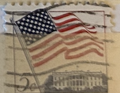
| SOURCE | TITLE| IMAGE MATCH | click to source page |
| eBay | USA - 1963 - Flag over White House - 5¢ - #3192 | eBay | 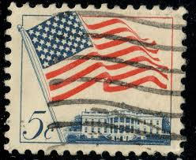 |
| eBay | USA - 1963 - Flag over White House - 5¢ - #3190 | eBay | 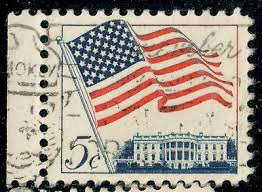 |
| HipStamp | US #1208 Flag over White House; Used | United States, General Issue Stamp / HipStamp | 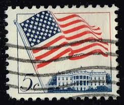 |
| 1963 USA Stamp | 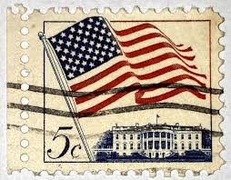 | |
| eBay | 5 Cent Flags, National Emblems Used US Stamps (1901-Now) for sale | eBay | 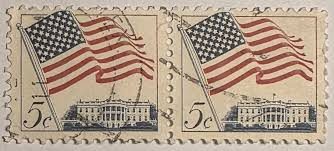 |
| eBay | 6 Cent Flags, National Emblems Used US Stamps (1901-Now) for sale | eBay | 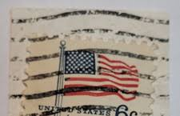 |
| HipStamp | 1208 USED FLAG | United States, General Issue Stamp / HipStamp | 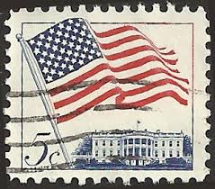 |
| ebid.net | US Stamp #1208 used: 1963 5c Flag over White House [3] on eBid United States | 142084865 | 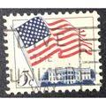 |
| iStock | American Flag Flying Over White House Vintage Us Postage Stamp Stock Photo - Download Image Now - iStock | 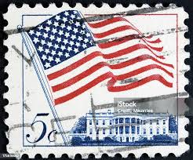 |
| eBay | Washington, DC Map of Our Nation's Capital Vintage Postcard Posted 1967 | eBay | 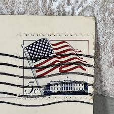 |
| Shutterstock | United States Circa 1962 5 Cents Stock Photo 74917453 | Shutterstock | 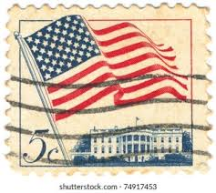 |
| Mystic Stamp | First Definitive U.S. Flag Stamp | Mystic Stamp Discovery Center | 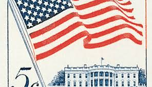 |
| iStock | Vintage 1962 Stamp Flag And White House Stock Photo - Download Image Now - Postage Stamp, US President, Blue - iStock | 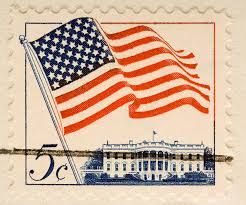 |
| iStock | Vintage Us Postage Stamp Stock Photo - Download Image Now - American Flag, Black Background, Close-up - iStock | 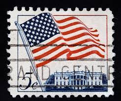 |
| Stamp Auction | Robert A. Siegel Auction Galleries, Inc. Sale - 1215 Page 65 | 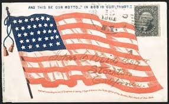 |
| HipStamp | US #1208 Flag over White House; Used (0.25) | United States, General Issue Stamp / HipStamp | 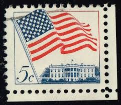 |
| Shutterstock | 8+ Thousand Definitive Stamps Royalty-Free Images, Stock Photos & Pictures | Shutterstock | 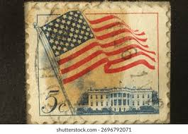 |
| eBay | USA - 1963 Flag over White House | eBay | 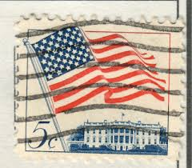 |
| eBay | 1973 SUPER SKUNK STEAM TRAIN CALIFORNIA WESTERN RAILROAD Postcard Fort Bragg B1 | eBay | 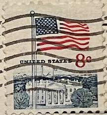 |
| Mystic Stamp Company | 1338Gh - 1971 8c Flag & White House, Dark Blue, Red & Slate Green, Imperf. Error - Mystic Stamp Company | 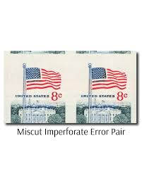 |
| Lanoux West Real Estate Co. (@lanouxwest) • Facebook | 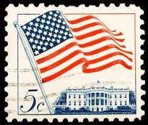 | |
| eBay | STAMP US SCOTT 1208 "US Flag & White House" 5 CENT 1963 USED FANCY CANCEL | eBay | 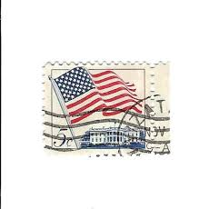 |
| eBay | U.S. Postage Stamp ~ American Flag/Land of the Free ... ~ 15¢ Stamp Posted ~ D15 | eBay | 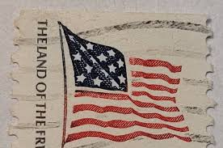 |
| Etsy | Handmade USA / America Greeting Card - Made With Authentic USA Vintage Postage Stamps - Blank Inside - Birthday, Thank You, Congratulations - Etsy | 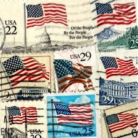 |
| misterevo.com | 5 Cent U.S Postage Stamp White House & American Flag | 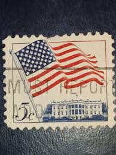 |
| The Metropolitan Museum of Art | Issued by American Caramel Company, Philadelphia - Flag of the United States, from the Flag Caramels series (E15) for the American Caramel Company - The Metropolitan Museum of Art | 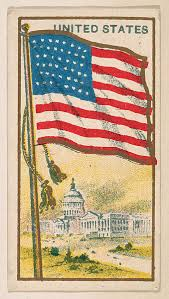 |
| Dreamstime.com | 418 Us Postal Stamps Stock Photos - Free & Royalty-Free Stock Photos from Dreamstime | 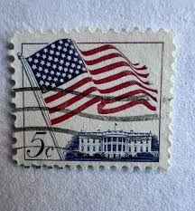 |
| eBay | 6 центовых флагов, национальные гербы, б/у марки США (с 1901 г.) - огромный выбор по лучшим ценам | eBay | 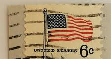 |
| HipStamp | 2523 US 29c Flag over Mt Rushmore coil PNS #1, used | United States, General Issue Stamp / HipStamp | 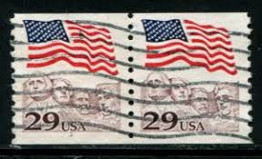 |
| Shutterstock | 2+ Hundred 13 Cent Stamp Royalty-Free Images, Stock Photos & Pictures | Shutterstock | 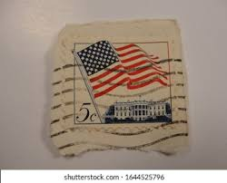 |
| For all the bibliophile's | 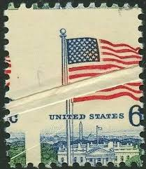 | |
| Shutterstock | Ukraine Kiyiv February 2 2024stamp Printed Stock Photo 2533592751 | Shutterstock | 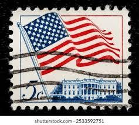 |
| eBay | US Stamp US Flag Over White House 5c Used Wave Cancel 1208 | eBay | 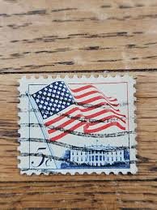 |
| ebid.net | US Stamp #1208 used: 1963 5c Flag over White House [4] on eBid United States | 142084867 | 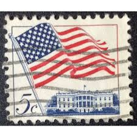 |
| eBay | U.S. Postage Stamp ~ American Flag/Land of the Free ... ~ 15¢ Stamp Posted ~ F45 | eBay | 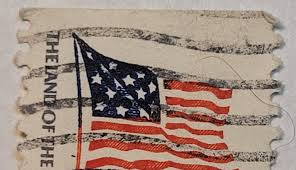 |
| Value of Old Stamps from 1936 | 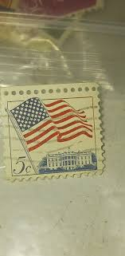 | |
| Liberation Day, really? #theworldwelivein | 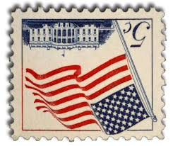 | |
| Dreamstime.com | Waving United Nations UN Flag with Eiffel Tower - Paris, France Editorial Image - Image of color, blue: 209654125 | 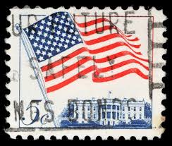 |
| Substack | 1343da79-876e-462d-a190-5a1e56f29945_480x480.webp | 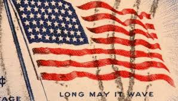 |
| iStock | Us Postage Stamp Stock Photo - Download Image Now - American Flag, Architecture, Black Background - iStock | 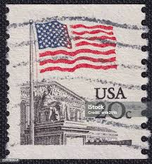 |
| eBay | STAMP US SCOTT 1208 "US Flag & White House" 5 CENT 1963 USED HORIZ PAIR | eBay | 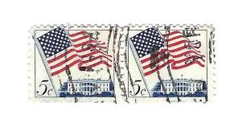 |
| eBay | U.S. Postage Stamp ~ American Flag/Land of the Free ... ~ 15¢ Stamp Posted ~ P75 | eBay | 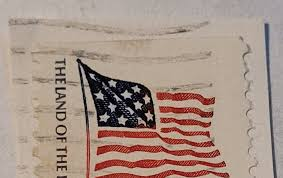 |
| eBay | Flags, National Emblems White Coil US Postage Stamps for sale | eBay | 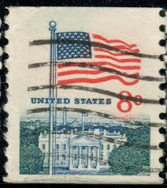 |
| iStock | Patriotic Retro Background With American Flag Stamp Stock Photo - Download Image Now - iStock | 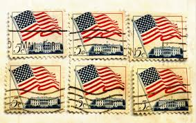 |
| HipStamp | US #1208, 5¢ Flag Over White House, Blk of 4 Large Perf Error, parts of 9 stamps | United States, General Issue Stamp / HipStamp | 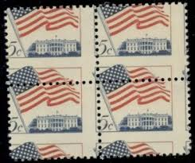 |
| eBay | U.S. Postage ~ Paul Dudley White M.D. 3¢/US Flag w/Capitol 22¢ ~ Posted ~ c.1986 | eBay | 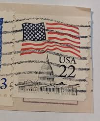 |
| eBay | Rock of Ages Framed for sale | eBay | 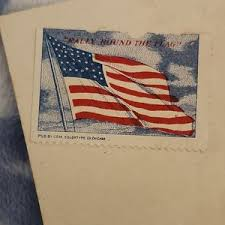 |
| eBay | Hello from Perham, Minnesota MN Postcard - July 15, 1972 | eBay | 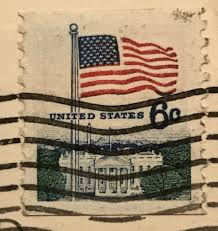 |
| allnumis.com | 22¢ 1985 - Flag over Capitol, Flag USA - United States of America - Stamp - 7637 | 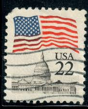 |
| eBay | U.S. Postage Stamp ~ American Flag/Land of the Free ... ~ 15¢ Stamp Posted - Z02 | eBay | |
| eBay | Civil War Patriotic Old Stamp Flag Conquer Slogan Galesburgh IL Jun 3 1861 z40 | eBay | |
| iStock | Flag Stock Photo - Download Image Now - American Flag, Capital Cities, Flag - iStock | |
| eBay | US Stamp Flag Over White House 8c Used | eBay | |
| eBay | 1984 PNC Commercial Cover, 20¢ Flag Over Supreme Court #9, Strip Of 4, VG | eBay | |
| eBay | STAMP US SCOTT 1338a "Flag Over White House" 6 CENT 1969 USED FANCY CANCEL PAIR | eBay | |
| eBay | 8c US Flag Stamp Line of 3 Copies Used Scott# 1338G US Issued 1971 - #B259 | eBay | |
| eBay | Scotts#1338a Us Stamp 1971 6c Flag White House Used | eBay | |
| Dreamstime.com | 723 Image Shows Flag United States Stock Photos - Free & Royalty-Free Stock Photos from Dreamstime | |
| Etsy | Stamp Art, US Flag, 5 Cents, USA, Used Stamps - Etsy Israel |